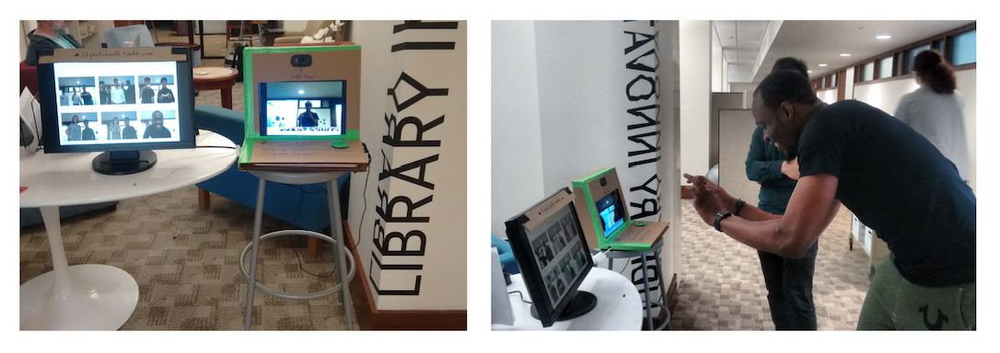
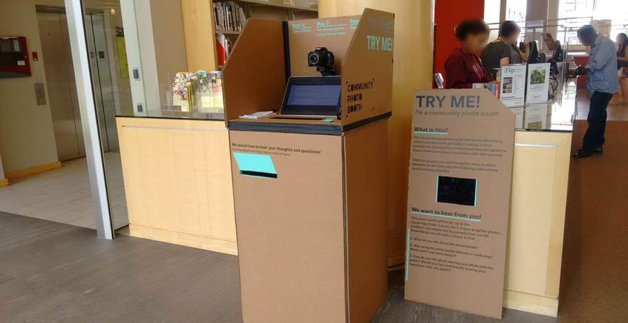
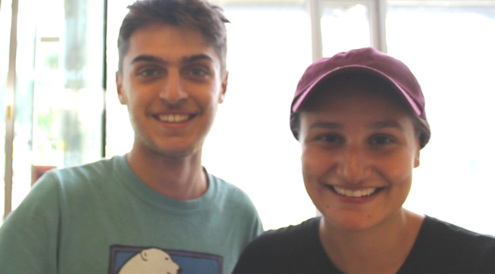
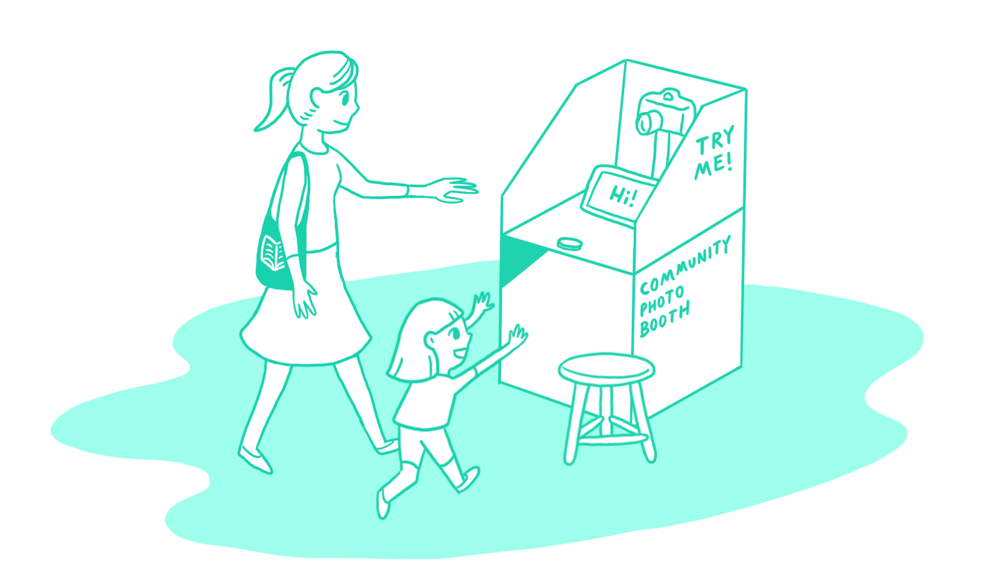

“How can we better learn about the people in our local community?”
Designer
I worked with the Cambridge Public Library to design and build a pop-up photo booth that allowed patrons to take portraits of themselves and share why they were visiting the library that day. This was a solo project while I was at Harvard’s Library Innovation Lab.
I created an initial prototype to playtest what the interaction would be like using IFTTT applets and a web automation software. The photos taken were uploaded onto a tumblr page for people to see. After playtesting, I decided on a few goals:
1.) I wanted the photo booth to take high quality photos of patrons, and have them displayed close by.
2.) I also wanted the patrons to be able to share what they were doing at the library that day.
3.) I wanted tohe photo booth to be made with affordable materials, and easily setup, broken down, and stored in a public library.

I set up prototype 2 at the front of the Cambridge Public Library for a few days to observe patron interactions.
The library patrons also left behind some wonderful portraits!
What are you doing at the library today?: “Shelter from the hot day!”
What are doing at the library today?: “Getting some work done for the new school year (we are teachers)”
What are you up to at the library today?: “Books on tape for 9 year old and poker books for 13 yo”
What are you up to at the library today?: “I am picking up a dvd and making my almost daily visit to this very special community space.”
Key Takeaways:
> Many patrons thought the screen was a touchscreen. There were too many ways to interact with the photo booth (button, mouse, screen, keyboard). In the next version, redesign to a simpler touchscreen interface.
> The photo booth was too high for younger patrons, so their portraits usually only had the upper half of their heads in them.
After observing patrons interact with the prototype, I worked on a redesign where the interaction is completely with a touchscreen.
You can try out the redesign interface here
I also envisioned a redesign of the structure so it is lower in height, with a stool for people to sit. This height will make the photo booth more accessible to younger patrons, as well as wheelchair users.
Test out new touchscreen interface with patrons, build out display area where portraits can be shared, and build an online archive of the portraits.